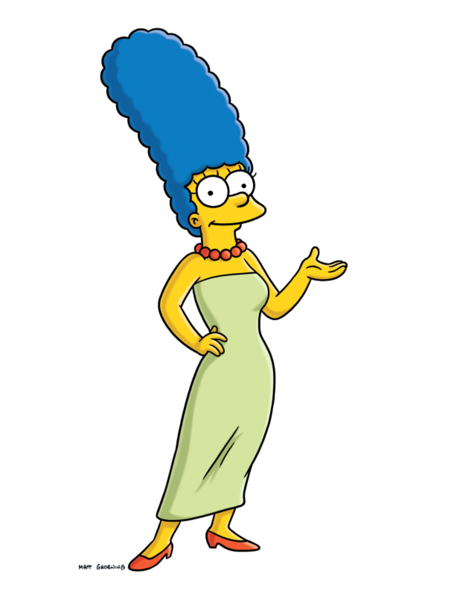
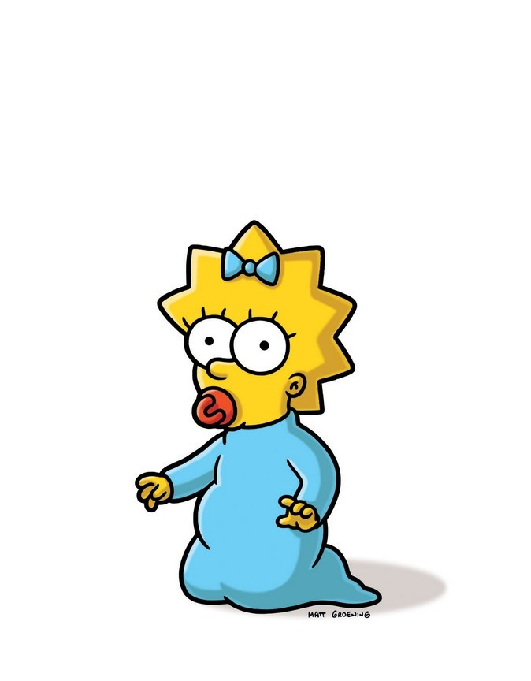

La mejor serie jamás hecha por el hombre

La comedia de dibujos animados se centra en una familia que vive en la ciudad de Springfield. La cabeza de la familia Simpson es Homero, quien no es un hombre de familia típico, obrero de una planta nuclear, él hace lo mejor para poder liderar a su familia, pero frecuentemente se da cuenta que son ellos los que lo mandan. La familia se compone de la matriarca amorosa, Marge, de cabello azul, el hijo agitador Bart, la hija aplicada Lisa y la bebé Maggie.
Personajes Principales

Homero
Padre de familia Perezoso Calvo

Marge
Madre de familia Responsabe Sexy

Maggie
Hija de la familia Bebé Chupa

Lisa
Hija de la familia Inteligente Lista
Milhouse
Amigo de Bart Simp ÑoÑo

Bart
Hijo de la familia Rebelde Puberto

Flanders
Religioso Pendejo Amable

Apu
Negro Emprendedor Indú